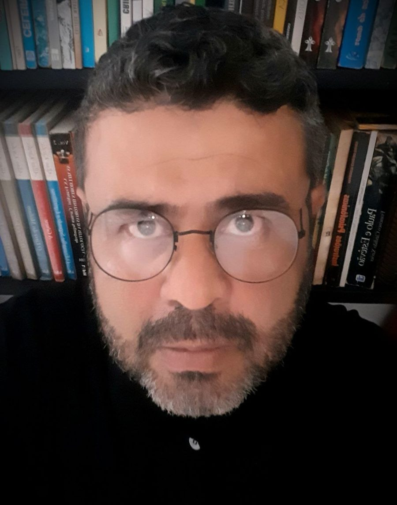
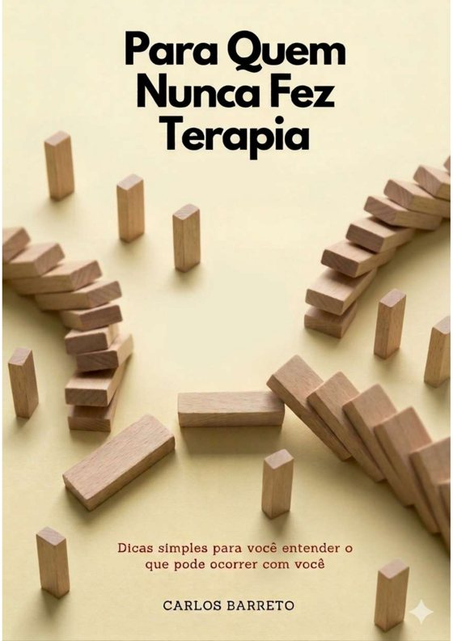

Clínica da Escuta · Psicanálise online
Aqui você pode falar.
Psicanálise online para adultos, com escuta ética, sem pressa e sem julgamento. Uma clínica com valores sociais para quem precisa ser acolhido e não pode pagar o preço de mercado.
A primeira mensagem não compromete você com nada. É só um começo.

Convite aberto
Para quem nunca fez terapia
Ebook gratuito, em linguagem simples e acolhedora
Para quem sempre quis entender o que acontece numa terapia, mas nunca teve coragem ou oportunidade de começar. Falar de si não precisa ser doloroso. Pode ser um alívio.
Baixar o ebook gratuito
Uma nova era para a escuta
Uma clínica com valores sociais
Em 25 de abril de 2025 começamos um trabalho ousado e urgente: atendimento para quem realmente não pode pagar os valores praticados por aí.
Por ser totalmente online, os custos são menores e o atendimento fica mais acessível. Na primeira conversa fazemos juntos o levantamento da sua situação para chegar a um valor possível.
Inspirados nas clínicas públicas que Freud defendeu em 1922, buscamos tornar a escuta um serviço para todos.
Perguntar sobre valoresPara quem é este espaço
Para adultos que enfrentam ansiedade, conflitos familiares e sofrimento emocional, e não têm onde colocar isso em palavras. Para quem nunca fez terapia e tem dúvidas, e também para quem já tentou e quer um lugar onde seja realmente ouvido.
Na psicanálise, você fala livremente e o analista escuta com atenção e responsabilidade. Não é aconselhamento rápido nem receita de felicidade: é um trabalho feito com você, no seu tempo.
Como funciona
Você me chama
Pelo WhatsApp, com uma mensagem simples. Não precisa explicar tudo.
Primeira conversa
Nos conhecemos, você conta o que quiser e tira suas dúvidas. Nesse momento também conversamos sobre a sua situação para definir o valor possível.
Seguimos no seu ritmo
Se fizer sentido para você, definimos os encontros e começamos o trabalho, todo online, de onde você estiver.
Quem escuta
Carlos Barreto
Psicanalista e escritor, criador da Clínica da Escuta. Meu trabalho nasce do encontro com histórias e da convicção de que ser escutado com presença pode ser o início de uma nova forma de existir.
Busco tornar o cuidado emocional mais acessível, sem abrir mão da complexidade que cada história carrega.
Participação
- Membro do Coletivo de Pesquisa Ativista em Psicanálise Educação e Cultura
- Membro da Escola Psicanalítica da Escuta Periphérica
- Membro da Sociedade Psicanalítica Ecos Freudianos
Atuação
- Clínica da Escuta
- Dispositivo de Escuta Xica Manicongo